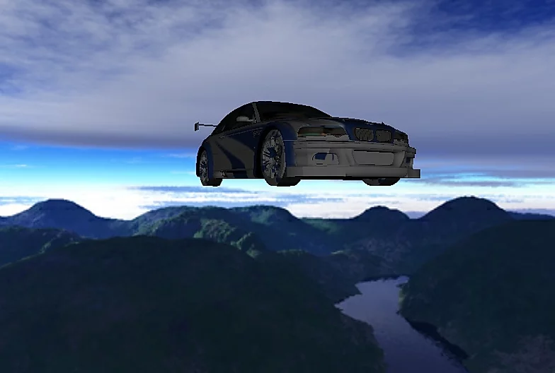

StevEngine (2017)
This engine is a colaboration between my friend Luc and I. It is created using Open GL 4.2 for rendering, Bullet Physics, and FMOD for sound. It has model loading, 3D Sound, Frustum culling, render batching, and more.
GitHub Link